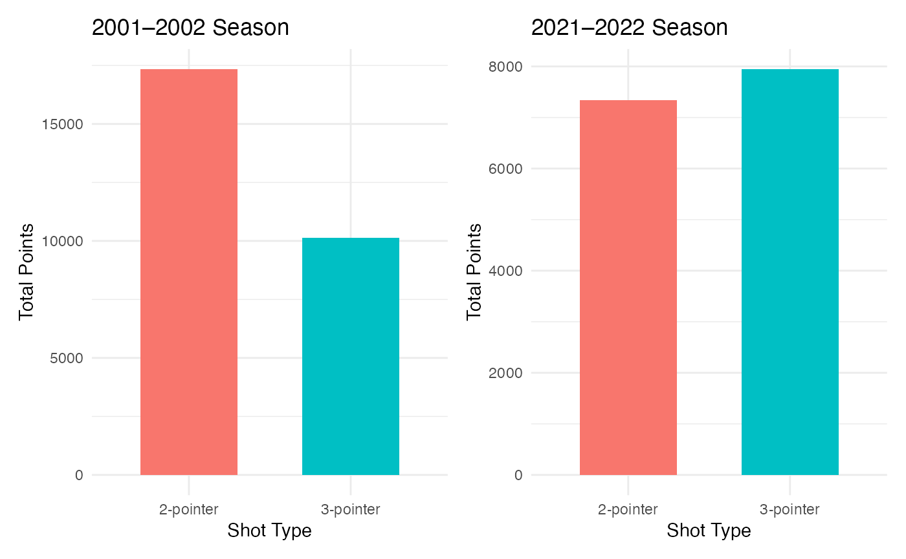

nbashotpackage
nbashotpackage.Rmd
library(nbashotpackage)
library(dplyr)
#>
#> Attaching package: 'dplyr'
#> The following objects are masked from 'package:stats':
#>
#> filter, lag
#> The following objects are masked from 'package:base':
#>
#> intersect, setdiff, setequal, union
library(ggplot2)
library(patchwork)Introduction
The nbashotspackage provides tools to explore a data set that contains NBA shooting data from the 2001-2002 and 2021-2022 seasons (2 seasons).
This vignette takes users through a basic demonstration that encapsulates the purpose of this package. It will explore:
- Load the data set included
clean_data. - Utilise the
analyse_shots()function. - Output interpretation from this analysis
- Launch the interactive Shiny app that is included in the package.
The goal of this is to allow users to compare shot selection between the two seasons, specifically when it comes to the frequency of 2-pointer and 3-pointer shots.
The Data
The data that is included in this package is already processed and cleaned.
head(clean_data)
#> # A tibble: 6 × 13
#> match_id shotX shotY quarter time_remaining player team made shot_type
#> <chr> <dbl> <dbl> <chr> <hms> <chr> <chr> <lgl> <chr>
#> 1 200010310ATL 8.3 20.2 1st quar… 41340 secs Baron… CHH FALSE 2-pointer
#> 2 200010310ATL 35.9 15.8 1st quar… 38460 secs Jamal… CHH FALSE 2-pointer
#> 3 200010310ATL 24 5 1st quar… 38280 secs Baron… CHH FALSE 2-pointer
#> 4 200010310ATL 15.4 5.9 1st quar… 34560 secs Elden… CHH FALSE 2-pointer
#> 5 200010310ATL 20.3 25 1st quar… 33480 secs David… CHH TRUE 2-pointer
#> 6 200010310ATL 19 6.9 1st quar… 31200 secs Elden… CHH FALSE 2-pointer
#> # ℹ 4 more variables: distance <dbl>, score <chr>, opp <chr>, status <chr>To view a full description of variables and other information run the below code. However, key variables for this analysis include:
- team: team abbreviation (e.g., BOS, MIL, ATL)
- shot_type: “2-pointer” or “3-pointer”
- match_id: unique game identifier
- shot_result: “TRUE”, “FALSE”
?clean_dataAnalysis of Shot Type
Here we use the main function of this package
analyse_shots()
This creates a summary tibble and a side-by-side bar chart comparing data across the two seasons with optional filters for team (NBA team selection) and metric (volume of points or shots)
Example
An example of the plot comparison:
results <- analyse_shots(clean_data, team_filter = "BOS", metric = "points")
results$plot
Interpretation
This chart shows the total amount of points scored via 2pt and 3pt attempts for the Boston Celtics. Comparing between the 2001-2002 season and the 2021-2022 season we can see that the proportion of 3pt shots has increased significantly compared to that of 2pt shots. This is likely due to the reduction of mid range shots (either driving to the basket or steping back for the more valuable 3pt shots).
Shiny App
The package includes a Shiny app that allows the users to interactively:
- Select NBA team
- Select metric (shots or points)
- View and compare shots and charts
- Further explanations and interpretations
To launch this app, use run_my_app()